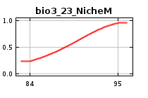
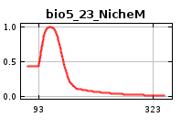
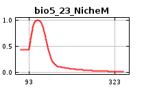

| Cumulative threshold | Cloglog threshold | Description | Fractional predicted area | Training omission rate |
|---|---|---|---|---|
| 1.000 | 0.013 | Fixed cumulative value 1 | 0.506 | 0.000 |
| 5.000 | 0.020 | Fixed cumulative value 5 | 0.368 | 0.000 |
| 10.000 | 0.035 | Fixed cumulative value 10 | 0.139 | 0.000 |
| 14.117 | 0.182 | Minimum training presence | 0.096 | 0.000 |
| 19.114 | 0.262 | 10 percentile training presence | 0.074 | 0.089 |
| 15.969 | 0.244 | Equal training sensitivity and specificity | 0.088 | 0.089 |
| 14.117 | 0.182 | Maximum training sensitivity plus specificity | 0.096 | 0.000 |
| 11.089 | 0.057 | Balance training omission, predicted area and threshold value | 0.130 | 0.000 |
| 11.447 | 0.058 | Equate entropy of thresholded and original distributions | 0.123 | 0.000 |

 

| Variable | Percent contribution | Permutation importance |
|---|---|---|
| bio8_23_NicheM | 55.1 | 0 |
| Mean_Nubosity_NicheM | 13.1 | 26.5 |
| bio15_23_NicheM | 9.1 | 3.8 |
| bio4_23_NicheM | 8.6 | 31.2 |
| bio14_23_NicheM | 4.3 | 0.7 |
| bio13_23_NicheM | 2.9 | 1.6 |
| bio2_23_NicheM | 2 | 12.8 |
| bio18_23_NicheM | 1.4 | 11.8 |
| bio3_23_NicheM | 1.4 | 2.4 |
| bio17_23_NicheM | 1.2 | 0 |
| bio6_23_NicheM | 0.4 | 6.6 |
| bio9_23_NicheM | 0.2 | 0.6 |
| bio12_23_NicheM | 0.2 | 1.6 |
| bio11_23_NicheM | 0.1 | 0 |
| bio7_23_NicheM | 0.1 | 0 |
| bio19_23_NicheM | 0.1 | 0.4 |
| bio5_23_NicheM | 0.1 | 0 |
| bio1_23_NicheM | 0 | 0 |
| bio16_23_NicheM | 0 | 0 |
| bio10_23_NicheM | 0 | 0 |
| Forest | 0 | 0 |